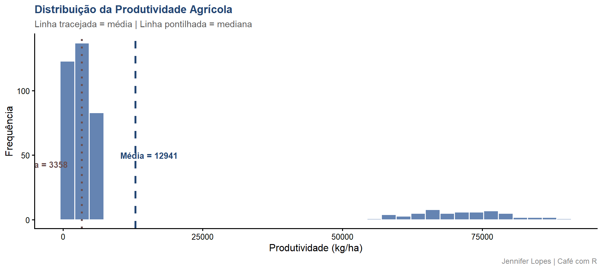
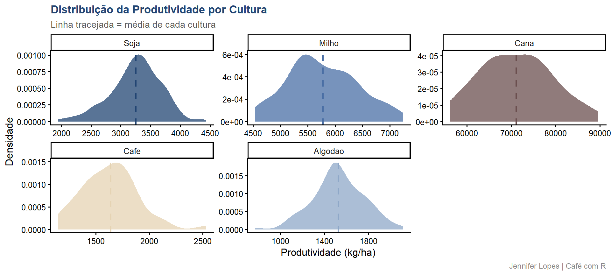
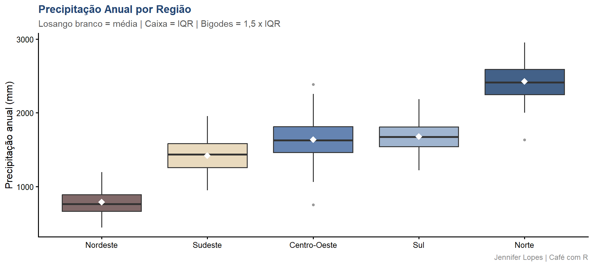
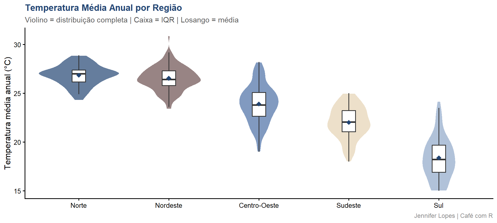
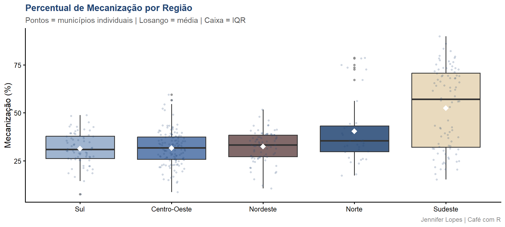
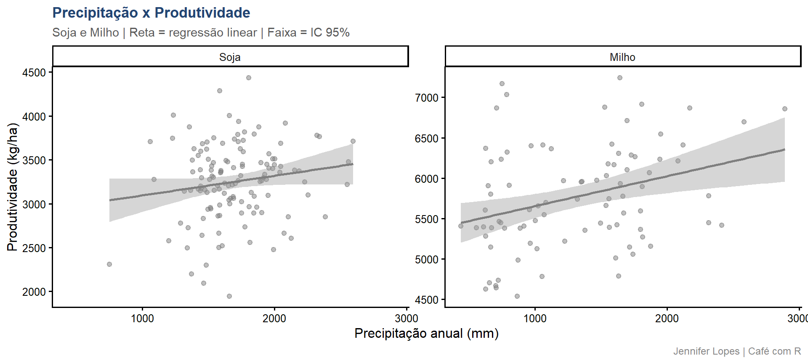
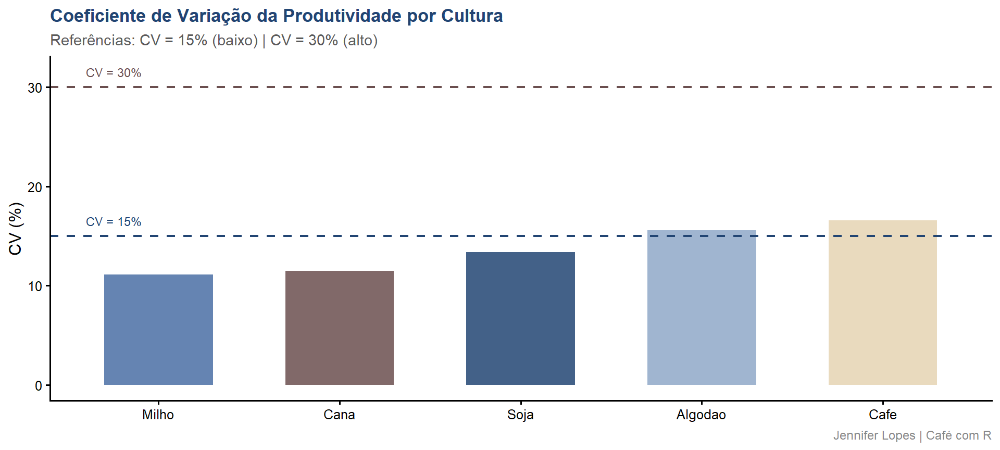

Aula 16 - Estatística Descritiva
Fundamentos teóricos e aplicação em dados agrícolas simulados no R - Para fins didáticos
Democratização
Esta aula foi construída para mostrar que o R vai muito além da análise estatística. Ele se conecta, ele escala, ele vai para produção.

Essa é a Meguy, minha gatinha linda e a mascote do Café com R.
Acompanhe o Café com R

EM BREVE - NO YOUTUBE

Inscreva-se já no Link.
O que você vai aprender
Bloco 1 - Medidas de Tendência Central
- Conceito e formulação de média, mediana e moda
- Limites e condições de uso de cada medida
- Aplicação em dados de produtividade agrícola com código em R
- Interpretação dos resultados e discussão técnica
O que você vai aprender
Bloco 2 - Medidas de Dispersão
- Conceito e formulação de variância, desvio padrão, CV e IQR
- Limites e condições de uso de cada medida
- Aplicação em dados de precipitação e produtividade por região
- Interpretação dos resultados e discussão técnica
Conjunto de dados
400 municípios agrícolas brasileiros simulados com estrutura realista por região:
regiao: Norte, Nordeste, Centro-Oeste, Sudeste e Sulcultura: cultura principal do município (Soja, Milho, Cana, Café, Algodão)temperatura_media: temperatura média anual em graus Celsiusprecipitacao_anual: precipitação acumulada anual em milímetrosprodutividade: produtividade por hectare em kg/haarea_plantada: área plantada em hectaresmecanizacao_pct: percentual de área com mecanização
Código - Prévia dos dados
Resultado - Prévia dos dados
| municipio | regiao | cultura | temperatura_media | precipitacao_anual | produtividade | mecanizacao_pct |
|---|---|---|---|---|---|---|
| Mun_001 | Sudeste | Cafe | 22.2 | 1296 | 2039 | 33.0 |
| Mun_002 | Sudeste | Cana | 23.5 | 1511 | 65639 | 68.1 |
| Mun_003 | Centro-Oeste | Soja | 21.8 | 1899 | 3466 | 30.2 |
Interpretação - Prévia dos dados
O que observar nas primeiras linhas:
- Cada linha representa um município com suas características climáticas e agrícolas
- A variável
culturaestrutura toda a análise descritiva, pois as escalas de produtividade são incomparáveis entre culturas sem estratificação produtividadeeprecipitacao_anualestão em escalas muito diferentes entre grupos, o que exige atenção na escolha das medidas descritivas- Os dados estão em formato tidy: uma observação por linha e uma variável por coluna
Código - Resumo geral
df |>
select(temperatura_media, precipitacao_anual,
produtividade, area_plantada, mecanizacao_pct) |>
skim() |>
as_tibble() |>
select(skim_variable, numeric.mean, numeric.sd,
numeric.p25, numeric.p75, numeric.hist) |>
rename(
Variavel = skim_variable,
Media = numeric.mean,
DP = numeric.sd,
Q1 = numeric.p25,
Q3 = numeric.p75,
Histograma = numeric.hist) |>
mutate(across(where(is.numeric), ~ round(.x, 2))) |>
kable(caption = "Resumo descritivo das variáveis numéricas") |>
kable_styling(
bootstrap_options = c("striped","hover"),
full_width = TRUE, font_size = 12)Resultado - Resumo geral
| Variavel | Media | DP | Q1 | Q3 | Histograma |
|---|---|---|---|---|---|
| temperatura_media | 23.33 | 3.31 | 21.17 | 26.00 | ▂▅▇▇▁ |
| precipitacao_anual | 1500.22 | 494.07 | 1200.75 | 1760.50 | ▃▅▇▂▁ |
| produtividade | 12940.79 | 23997.21 | 1778.00 | 5707.00 | ▇▁▁▁▁ |
| area_plantada | 4093.11 | 10625.71 | 839.25 | 4529.75 | ▇▁▁▁▁ |
| mecanizacao_pct | 37.21 | 15.61 | 27.00 | 41.00 | ▂▇▂▁▁ |
Interpretação - Resumo geral
O que o resumo revela:
produtividadetem média muito superior às demais variáveis em termos absolutos, refletindo a escala da cana-de-açúcar em kg/haarea_plantadaapresenta Q1 e Q3 muito distantes da média, indicando assimetria positiva e necessidade de transformação logarítmica para análisemecanizacao_pcté a variável mais homogênea, com menor distância entre Q1 e Q3- O mini-histograma da coluna
Histogramaé a primeira indicação visual da forma de cada distribuição
Bloco 1
Medidas de Tendência Central
Conceito - Tendência Central
Medidas de tendência central descrevem o valor em torno do qual os dados se concentram:
- São a primeira ferramenta de qualquer análise descritiva
- A escolha da medida correta depende da escala da variável, da forma da distribuição e da presença de valores extremos
- Três medidas principais: média aritmética, mediana e moda
- Cada uma tem propriedades matemáticas distintas e condições específicas de aplicação
- Usar a medida errada compromete qualquer interpretação subsequente
Formulação - Média aritmética
A média aritmética \(\bar{x}\) é a soma de todos os valores dividida pelo número de observações:
\[\bar{x} = \frac{1}{n} \sum_{i=1}^{n} x_i\]
Parâmetros e propriedades:
- \(n\): número de observações na amostra
- \(x_i\): valor da \(i\)-ésima observação
- \(\bar{x}\) é o estimador não viesado da esperança populacional \(\mu = E(X)\)
- A média minimiza a soma dos quadrados dos desvios: \(\sum(x_i - \bar{x})^2\)
Formulação - Mediana
A mediana \(\tilde{x}\) é o valor que ocupa a posição central após ordenação crescente:
\[\tilde{x} = \begin{cases} x_{\left(\frac{n+1}{2}\right)} & \text{se } n \text{ é ímpar} \\ \dfrac{x_{\left(\frac{n}{2}\right)} + x_{\left(\frac{n}{2}+1\right)}}{2} & \text{se } n \text{ é par} \end{cases}\]
Propriedades:
- A mediana minimiza a soma dos desvios absolutos: \(\sum|x_i - \tilde{x}|\)
- É um estimador robusto: não é afetado por valores extremos
- Recomendada para distribuições assimétricas e variáveis ordinais
Formulação - Moda e critério de assimetria
A moda é o valor com maior frequência absoluta:
- Em variáveis contínuas: corresponde ao pico da função densidade de probabilidade
- Em variáveis nominais: única medida de tendência central com interpretação válida
Critério quantitativo de assimetria:
\[\text{Assimetria normalizada} = \frac{|\bar{x} - \tilde{x}|}{s}\]
Quando esse valor supera 0,2, a distribuição é assimétrica e a mediana é mais representativa.
Atenção - Escala e validade das medidas
Regra de escala para tendência central:
- A média de uma variável nominal é matematicamente indefinida
- Para variáveis como
regiaoecultura, apenas a moda tem interpretação válida - Usar a média em variável nominal é um erro conceitual, não apenas estatístico
Limites de uso - Escala e sensibilidade
| Medida | Escala válida | Sensível a outliers |
|---|---|---|
| Média | Intervalar e racional | Sim |
| Mediana | Ordinal, intervalar e racional | Não |
| Moda | Nominal, ordinal, intervalar e racional | Não |
Limites de uso - Situações práticas
| Situação | Medida recomendada |
|---|---|
| Distribuição simétrica, sem outliers | Média |
| Distribuição assimétrica ou com outliers | Mediana |
Limites de uso - Variáveis agrícolas
| Variável | Medida recomendada | Justificativa |
|---|---|---|
temperatura_media |
Média | Distribuição aproximadamente simétrica |
precipitacao_anual |
Mediana | Assimetria positiva por região |
area_plantada |
Mediana | Forte assimetria positiva (log-normal) |
Código - Tendência central por cultura
df |>
group_by(cultura) |>
summarise(
n = n(),
media = round(mean(produtividade), 1),
mediana = round(median(produtividade), 1),
dp = round(sd(produtividade), 1),
assimetria = round(
(mean(produtividade) - median(produtividade)) / sd(produtividade), 3),
.groups = "drop") |>
kable(
col.names = c("Cultura","n","Média","Mediana","DP","Assim. norm."),
caption = "Tendência central da produtividade (kg/ha) por cultura") |>
kable_styling(
bootstrap_options = c("striped","hover"),
full_width = TRUE, font_size = 12)Resultado - Tendência central por cultura
| Cultura | n | Média | Mediana | DP | Assim. norm. |
|---|---|---|---|---|---|
| Soja | 130 | 3251.4 | 3276.5 | 435.6 | -0.058 |
| Milho | 87 | 5770.6 | 5696.0 | 642.8 | 0.116 |
| Cana | 57 | 71128.6 | 70310.0 | 8160.3 | 0.100 |
| Cafe | 44 | 1638.7 | 1653.0 | 272.6 | -0.053 |
| Algodao | 82 | 1526.3 | 1510.5 | 238.1 | 0.066 |
Interpretação - Tendência central por cultura
O que a tabela revela:
- A cana-de-açúcar registra produtividade nominal muito superior às demais culturas, tornando inválida a comparação direta da média entre culturas sem padronização de unidade
- Para soja e milho, a assimetria normalizada próxima de zero confirma distribuição aproximadamente simétrica, onde a média é representativa
- Culturas com assimetria normalizada acima de 0,2 indicam que a mediana é a medida de posição mais adequada
- A coluna
Assim. norm.é o critério formal para decidir entre média e mediana
Dica - Critério de assimetria normalizada
Como usar o critério na prática:
- Calcule a assimetria normalizada antes de escolher entre média e mediana
- Aplique o critério por grupo, nunca para o conjunto completo quando os dados são mistos
- Valores entre -0,2 e 0,2 indicam simetria suficiente para uso da média
- Nunca assuma simetria sem verificação quantitativa
Código - Histograma da produtividade
media_p <- mean(df$produtividade)
mediana_p <- median(df$produtividade)
df |>
ggplot(aes(x = produtividade)) +
geom_histogram(
bins = 35, fill = cores_cafe["azul_claro"],
color = "white", alpha = 0.85) +
geom_vline(
xintercept = media_p, color = cores_cafe["azul_escuro"],
linewidth = 1.2, linetype = "dashed") +
geom_vline(
xintercept = mediana_p, color = cores_cafe["marrom"],
linewidth = 1.2, linetype = "dotted") +
annotate(
"text", x = media_p + 2500, y = 50,
label = paste0("Média = ", round(media_p, 0)),
color = cores_cafe["azul_escuro"], fontface = "bold", size = 3.5) +
annotate(
"text", x = mediana_p - 2500, y = 43,
label = paste0("Mediana = ", round(mediana_p, 0)),
color = cores_cafe["marrom"], fontface = "bold", size = 3.5, hjust = 1) +
labs(
title = "Distribuição da Produtividade Agrícola",
subtitle = "Linha tracejada = média | Linha pontilhada = mediana",
x = "Produtividade (kg/ha)", y = "Frequência",
caption = "Jennifer Lopes | Café com R") +
temaGráfico - Histograma da produtividade

Interpretação - Histograma da produtividade
O que o gráfico revela:
- A distribuição é bimodal: dois picos distintos refletem culturas de baixa produtividade (Café, Algodão) e de alta produtividade (Milho, Cana)
- A média é puxada para a direita pelos valores extremos da cana, enquanto a mediana resiste a esse efeito
- A separação visível entre média e mediana confirma assimetria positiva na distribuição agregada
- Em distribuições bimodais, nenhuma medida de posição descreve bem o conjunto sem estratificação por grupo
Código - Densidade por cultura
medias_cultura <- df |>
group_by(cultura) |>
summarise(media = mean(produtividade), .groups = "drop")
df |>
ggplot(aes(x = produtividade, fill = cultura)) +
geom_density(alpha = 0.75, color = "white") +
geom_vline(
data = medias_cultura,
aes(xintercept = media, color = cultura),
linewidth = 1, linetype = "dashed") +
scale_fill_manual(values = paleta_culturas) +
scale_color_manual(values = paleta_culturas) +
facet_wrap(~cultura, scales = "free", ncol = 3) +
labs(
title = "Distribuição da Produtividade por Cultura",
subtitle = "Linha tracejada = média de cada cultura",
x = "Produtividade (kg/ha)", y = "Densidade",
caption = "Jennifer Lopes | Café com R") +
tema +
theme(legend.position = "none")Gráfico - Densidade por cultura

Interpretação - Densidade por cultura
O que os painéis revelam:
- Cada cultura tem uma escala própria de produtividade -
scales = "free"é obrigatório para visualizar a forma individual de cada distribuição - Café e Algodão apresentam distribuições mais concentradas, com menor dispersão em torno da média
- Milho apresenta a distribuição mais larga, refletindo alta dependência da precipitação regional
- Cana apresenta leve assimetria negativa, com poucos municípios de baixa produtividade puxando a cauda esquerda
Discussão técnica - Tendência central
Síntese dos resultados:
- A análise correta exige estratificação por cultura antes de calcular qualquer medida de tendência central
- Reportar a média geral de produtividade para um conjunto misto de culturas gera uma estatística sem significado agrícola
- Em contextos de política agrícola, usar a média geral pode levar a metas de produtividade irreais para culturas de menor escala
- O critério de assimetria normalizada deve ser calculado por grupo, não para o conjunto completo
Bloco 2
Medidas de Dispersão
Conceito - Dispersão
Medidas de dispersão quantificam a variabilidade dos dados em torno da tendência central:
- Duas distribuições com a mesma média podem ter dispersões completamente distintas
- Reportar apenas a tendência central sem a dispersão é uma descrição incompleta e tecnicamente inadequada
- A medida de dispersão deve ser sempre coerente com a medida de posição utilizada
- Quatro medidas principais: variância, desvio padrão, coeficiente de variação e IQR
Formulação - Variância e desvio padrão
A variância amostral \(s^2\) com correção de Bessel:
\[s^2 = \frac{1}{n-1} \sum_{i=1}^{n} (x_i - \bar{x})^2\]
O desvio padrão \(s = \sqrt{s^2}\):
- A divisão por \(n-1\) (correção de Bessel) torna \(s^2\) estimador não viesado de \(\sigma^2\)
- \(s\) é expresso na mesma unidade de \(x\), o que o torna diretamente interpretável
- Par natural da média: quando a média é a medida de posição, o desvio padrão é a dispersão correspondente
Formulação - CV e IQR
O coeficiente de variação \(CV\):
\[CV = \frac{s}{\bar{x}} \times 100\]
O intervalo interquartílico \(IQR\):
\[IQR = Q_3 - Q_1\]
- \(CV\) permite comparar variabilidade entre variáveis em escalas distintas
- \(IQR\) é robusto a outliers e o par natural da mediana
- Referências do \(CV\): abaixo de 15% (baixa), entre 15% e 30% (moderada), acima de 30% (alta)
Critério do boxplot de Tukey
Os bigodes do boxplot se estendem até os limites de Tukey:
\[L_{\inf} = Q_1 - 1{,}5 \times IQR \qquad L_{\sup} = Q_3 + 1{,}5 \times IQR\]
- Pontos além desses limites são classificados como outliers pelo critério de Tukey
- O limite de 1,5 é convencional e não implica que o valor é erro, apenas que é atípico
- O losango no boxplot representa a média, enquanto a linha central representa a mediana
Limites de uso - Dispersão
| Medida | Condição de uso | Sensível a outliers |
|---|---|---|
| Desvio padrão | Distribuição simétrica | Sim |
| IQR | Qualquer distribuição | Não |
Limites de uso - Quando usar cada medida
| Medida | Condição de uso | Sensível a outliers |
|---|---|---|
| CV | Média positiva e distante de zero | Moderadamente |
| Variância | Inferência e modelagem | Sim |
Limites de uso - Variáveis agrícolas
| Variável | Medida recomendada | Justificativa |
|---|---|---|
temperatura_media |
Desvio padrão | Par da média, distribuição simétrica |
precipitacao_anual |
IQR | Par da mediana, assimetria positiva |
| Comparação entre culturas | CV | Escalas distintas exigem medida adimensional |
Código - Dispersão da precipitação por região
df |>
group_by(regiao) |>
summarise(
n = n(),
media = round(mean(precipitacao_anual), 1),
dp = round(sd(precipitacao_anual), 1),
cv_pct = round(sd(precipitacao_anual) / mean(precipitacao_anual) * 100, 1),
q1 = round(quantile(precipitacao_anual, 0.25), 1),
q3 = round(quantile(precipitacao_anual, 0.75), 1),
iqr = round(IQR(precipitacao_anual), 1),
.groups = "drop") |>
kable(
col.names = c("Região","n","Média (mm)","DP (mm)","CV (%)","Q1","Q3","IQR"),
caption = "Dispersão da precipitação anual por região") |>
kable_styling(
bootstrap_options = c("striped","hover"),
full_width = TRUE, font_size = 12)Resultado - Dispersão por região
| Região | n | Média (mm) | DP (mm) | CV (%) | Q1 | Q3 | IQR |
|---|---|---|---|---|---|---|---|
| Norte | 36 | 2426.7 | 287.4 | 11.8 | 2250.5 | 2591.0 | 340.5 |
| Nordeste | 79 | 788.0 | 173.0 | 22.0 | 664.0 | 887.5 | 223.5 |
| Centro-Oeste | 128 | 1637.4 | 256.8 | 15.7 | 1463.2 | 1815.2 | 352.0 |
| Sudeste | 88 | 1420.8 | 232.7 | 16.4 | 1257.8 | 1582.8 | 325.0 |
| Sul | 69 | 1679.0 | 208.0 | 12.4 | 1543.0 | 1810.0 | 267.0 |
Interpretação - Dispersão por região
O que a tabela revela:
- O Nordeste apresenta menor precipitação média e menor IQR, indicando padrão climático mais homogêneo dentro da região
- Regiões com \(CV > 30\%\) concentram municípios com realidades climáticas muito distintas, limitando a efetividade de políticas agrícolas uniformes
- O Norte apresenta alta precipitação média, mas o IQR elevado indica grande variação interna
- A comparação entre regiões pelo \(CV\) é mais informativa do que pelo desvio padrão, pois elimina o efeito da escala
Código - Boxplot da precipitação
df |>
ggplot(aes(
x = reorder(regiao, precipitacao_anual, FUN = median),
y = precipitacao_anual,
fill = regiao)) +
geom_boxplot(alpha = 0.85, outlier.color = "#888888", outlier.size = 1.2) +
stat_summary(fun = mean, geom = "point", shape = 18, size = 3.5, color = "white") +
scale_fill_manual(values = paleta_regioes) +
labs(
title = "Precipitação Anual por Região",
subtitle = "Losango branco = média | Caixa = IQR | Bigodes = 1,5 x IQR",
x = NULL, y = "Precipitação anual (mm)",
caption = "Jennifer Lopes | Café com R") +
tema +
theme(legend.position = "none")Gráfico - Boxplot da precipitação

Interpretação - Boxplot da precipitação
O que o boxplot revela:
- A altura da caixa (IQR) indica a variabilidade dos 50% centrais: regiões com caixas maiores têm maior heterogeneidade interna
- O losango branco (média) acima da linha central (mediana) indica assimetria positiva naquela região
- Pontos além dos bigodes são outliers pelo critério de Tukey, representando municípios com precipitação atípica para sua região
- As regiões estão ordenadas pela mediana, revelando o padrão estrutural de precipitação de seco para úmido
Atenção - Outliers em dados climáticos
Sobre a interpretação de outliers:
- A presença de outliers não indica necessariamente erro de coleta ou problema nos dados
- Em dados climáticos, outliers frequentemente representam eventos reais de seca extrema ou excesso de chuva
- A decisão de remover um outlier exige justificativa substantiva, não apenas estatística
- O critério de Tukey classifica como atípico, não como incorreto
Código - Temperatura por região
df |>
ggplot(aes(x = regiao, y = temperatura_media, fill = regiao)) +
geom_violin(alpha = 0.7, color = "white") +
geom_boxplot(width = 0.15, fill = "white", outlier.shape = NA) +
stat_summary(fun = mean, geom = "point", shape = 18, size = 3, color = cores_cafe["azul_escuro"]) +
scale_fill_manual(values = paleta_regioes) +
labs(
title = "Temperatura Média Anual por Região",
subtitle = "Violino = distribuição completa | Caixa = IQR | Losango = média",
x = NULL, y = "Temperatura média anual (°C)",
caption = "Jennifer Lopes | Café com R") +
tema +
theme(legend.position = "none")Gráfico - Temperatura por região

Interpretação - Temperatura por região
O que o violin plot revela:
- O violin plot combina a forma da distribuição (violino) com o resumo dos cinco números (boxplot interno), sendo mais informativo do que o boxplot isolado
- A temperatura apresenta distribuição aproximadamente simétrica em todas as regiões, justificando o uso da média e do desvio padrão
- A separação entre regiões confirma que a temperatura é um preditor estrutural da cultura predominante em cada região
- A largura do violino em cada ponto de temperatura indica a densidade de municípios naquele valor
Código - Mecanização por região
df |>
ggplot(aes(x = reorder(regiao, mecanizacao_pct, FUN = median),
y = mecanizacao_pct,
fill = regiao)) +
geom_boxplot(alpha = 0.85, outlier.color = "#888888", outlier.size = 1.2) +
geom_jitter(width = 0.15, alpha = 0.15, size = 0.8, color = cores_cafe["azul_escuro"]) +
stat_summary(fun = mean, geom = "point", shape = 18, size = 3.5, color = "white") +
scale_fill_manual(values = paleta_regioes) +
labs(
title = "Percentual de Mecanização por Região",
subtitle = "Pontos = municípios individuais | Losango = média | Caixa = IQR",
x = NULL, y = "Mecanização (%)",
caption = "Jennifer Lopes | Café com R") +
tema +
theme(legend.position = "none")Gráfico - Mecanização por região

Interpretação - Mecanização por região
O que o gráfico revela:
- A adição de
geom_jitterao boxplot revela a distribuição real dos municípios por trás do resumo estatístico - Regiões com IQR menor apresentam municípios mais homogêneos em nível de mecanização
- A distância entre losango (média) e linha central (mediana) indica assimetria por região
- Regiões com maior mecanização tendem a apresentar culturas que exigem maior escala de operação (soja e milho)
Código - Scatter precipitação x produtividade
df |>
filter(cultura %in% c("Soja","Milho")) |>
ggplot(aes(x = precipitacao_anual, y = produtividade, color = cultura)) +
geom_point(alpha = 0.5, size = 1.8) +
geom_smooth(method = "lm", se = TRUE, linewidth = 1) +
scale_color_manual(values = c(
"Soja" = cores_cafe["azul_escuro"],
"Milho" = cores_cafe["marrom"])) +
facet_wrap(~cultura, scales = "free_y") +
labs(
title = "Precipitação x Produtividade",
subtitle = "Soja e Milho | Reta = regressão linear | Faixa = IC 95%",
x = "Precipitação anual (mm)", y = "Produtividade (kg/ha)",
caption = "Jennifer Lopes | Café com R") +
tema +
theme(legend.position = "none")Gráfico - Scatter precipitação x produtividade

Interpretação - Scatter precipitação x produtividade
O que o gráfico revela:
- A relação positiva entre precipitação e produtividade é mais acentuada para milho do que para soja, confirmando a maior dependência hídrica do milho
- A dispersão dos pontos em torno da reta de regressão indica o grau de variabilidade que a precipitação não explica sozinha
- A faixa cinza ao redor da reta é o intervalo de confiança de 95% da regressão linear
- Este gráfico conecta a análise descritiva com a análise de associação, que será aprofundada nos módulos de correlação e regressão
Código - CV por cultura
df |>
group_by(cultura) |>
summarise(
media = round(mean(produtividade), 1),
dp = round(sd(produtividade), 1),
cv_pct = round(sd(produtividade) / mean(produtividade) * 100, 1),
.groups = "drop") |>
mutate(
classificacao = case_when(
cv_pct < 15 ~ "Baixa variabilidade",
cv_pct < 30 ~ "Variabilidade moderada",
TRUE ~ "Alta variabilidade")) |>
kable(
col.names = c("Cultura","Média (kg/ha)","DP (kg/ha)","CV (%)","Classificação"),
caption = "Coeficiente de variação da produtividade por cultura") |>
kable_styling(
bootstrap_options = c("striped","hover"),
full_width = TRUE, font_size = 12)Resultado - CV por cultura
| Cultura | Média (kg/ha) | DP (kg/ha) | CV (%) | Classificação |
|---|---|---|---|---|
| Soja | 3251.4 | 435.6 | 13.4 | Baixa variabilidade |
| Milho | 5770.6 | 642.8 | 11.1 | Baixa variabilidade |
| Cana | 71128.6 | 8160.3 | 11.5 | Baixa variabilidade |
| Cafe | 1638.7 | 272.6 | 16.6 | Variabilidade moderada |
| Algodao | 1526.3 | 238.1 | 15.6 | Variabilidade moderada |
Interpretação - CV por cultura
O que a tabela revela:
- O \(CV\) é a única medida que permite comparar variabilidade entre cana (escala de 72.000 kg/ha) e café (escala de 1.800 kg/ha) de forma justa
- Culturas com \(CV\) elevado dependem fortemente de condições externas (precipitação, temperatura)
- A coluna Classificação traduz o \(CV\) em termos práticos para interpretação imediata
- Culturas com alta variabilidade relativa são mais difíceis de modelar com uma única medida de posição
Código - Gráfico do CV por cultura
df |>
group_by(cultura) |>
summarise(
cv_pct = round(sd(produtividade) / mean(produtividade) * 100, 1),
.groups = "drop") |>
ggplot(aes(x = reorder(cultura, cv_pct), y = cv_pct, fill = cultura)) +
geom_col(alpha = 0.85, width = 0.6) +
geom_hline(yintercept = 15, linetype = "dashed",
color = cores_cafe["azul_escuro"], linewidth = 0.8) +
geom_hline(yintercept = 30, linetype = "dashed",
color = cores_cafe["marrom"], linewidth = 0.8) +
annotate("text", x = 0.6, y = 16.5, label = "CV = 15%",
color = cores_cafe["azul_escuro"], size = 3.2, hjust = 0) +
annotate("text", x = 0.6, y = 31.5, label = "CV = 30%",
color = cores_cafe["marrom"], size = 3.2, hjust = 0) +
scale_fill_manual(values = paleta_culturas) +
labs(
title = "Coeficiente de Variação da Produtividade por Cultura",
subtitle = "Referências: CV = 15% (baixo) | CV = 30% (alto)",
x = NULL, y = "CV (%)",
caption = "Jennifer Lopes | Café com R") +
tema +
theme(legend.position = "none")Gráfico - CV por cultura

Interpretação - CV por cultura
O que o gráfico revela:
- Culturas acima da linha de CV = 30% apresentam alta variabilidade relativa entre municípios
- O \(CV\) elevado em soja e milho reflete a dependência dessas culturas à precipitação, que varia estruturalmente entre regiões
- O \(CV\) é a única medida que torna a comparação entre cana e café matematicamente válida
- Culturas com \(CV\) baixo têm produtividade mais homogênea, facilitando o estabelecimento de metas e benchmarks regionais
Dica - Como reportar CV em análises
Boas práticas para comunicação do CV:
- Sempre inclua as linhas de referência de 15% e 30% no gráfico para facilitar a leitura imediata
- Reporte o CV junto com a média e o desvio padrão, nunca isolado
- Em tabelas, inclua a coluna de classificação (baixa, moderada, alta) para facilitar a interpretação
- Nunca calcule CV para variáveis que podem assumir valores próximos de zero ou negativos
Discussão técnica - Dispersão
Síntese dos resultados:
- O \(CV\) é a medida correta para comparar variabilidade entre culturas em escalas distintas. O desvio padrão absoluto levaria a conclusões equivocadas
- O boxplot com \(IQR\) expõe a heterogeneidade interna de cada região, informação perdida ao reportar apenas média e desvio padrão
- Regiões com \(CV > 30\%\) na precipitação concentram municípios com realidades climáticas muito distintas
Discussão técnica - Pares corretos
Regra fundamental das medidas descritivas:
- Média é sempre reportada com desvio padrão: \(\bar{x} \pm s\)
- Mediana é sempre reportada com IQR: \(\tilde{x}\) [Q1; Q3]
- Misturar os pares produz uma descrição internamente inconsistente
Atenção - Par correto de medidas
O erro mais comum em análises descritivas:
- Reportar mediana com desvio padrão é internamente inconsistente
- Reportar média com IQR é igualmente incorreto
- A escolha do par deve ser deliberada e justificada pela forma da distribuição
- Em artigos científicos, o par incorreto é motivo de revisão pelo avaliador
Resumo - Tendência central
Quando usar cada medida de posição:
- Média: distribuição simétrica, sem outliers relevantes, escala intervalar ou racional
- Mediana: distribuição assimétrica, presença de outliers, escala ordinal ou superior
- Moda: variável nominal, identificação do valor mais frequente em qualquer escala
Resumo - Dispersão
Quando usar cada medida de dispersão:
- Desvio padrão: par da média, distribuição simétrica, mesma unidade de \(x\)
- IQR: par da mediana, distribuição assimétrica ou com outliers, robusto
- CV: comparação entre variáveis em escalas distintas, adimensional
- Variância: modelagem, inferência e cálculos matemáticos
Referências
Referências técnicas utilizadas nesta aula:
- Casella, G., Berger, R. L. (2002). Statistical Inference (2nd ed.). Duxbury.
- Tukey, J. W. (1977). Exploratory Data Analysis. Addison-Wesley.
- Wickham, H., Grolemund, G. (2023). R for Data Science (2nd ed.). O’Reilly. https://r4ds.hadley.nz
- Gelman, A., Hill, J. (2007). Data Analysis Using Regression and Multilevel Models. Cambridge.
Acompanhe o Café com R
EM BREVE - NO YOUTUBE
Inscreva-se já no Link.

Jennifer Lopes | Café com R | Estatística Descritiva